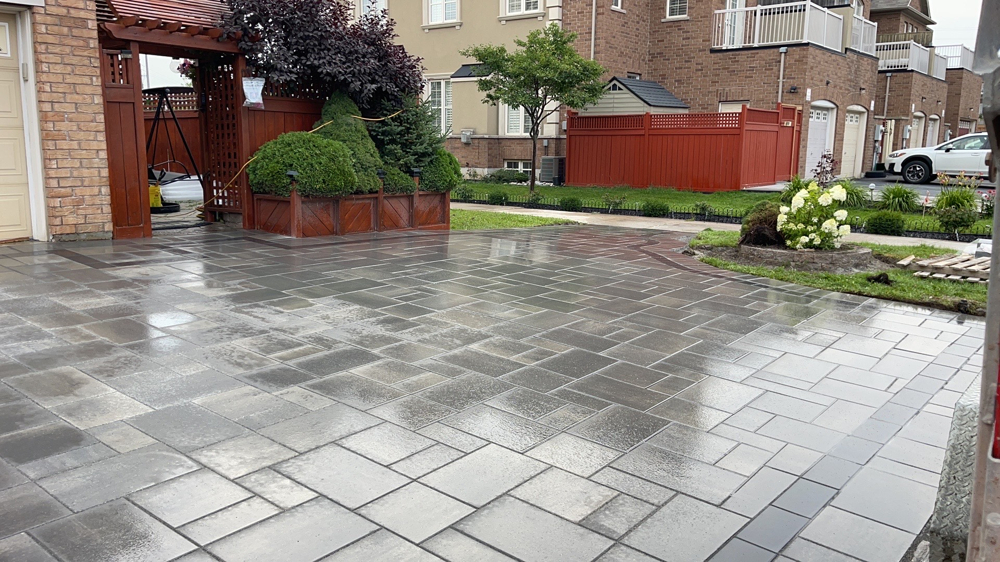

Many homeowners want a backyard that looks clean, modern, and inviting without requiring constant mowing, watering, weeding, staining, or seasonal repairs.
A low-maintenance backyard can reduce the time spent on upkeep while creating more usable space for relaxing, entertaining, children, pets, or everyday family life.
The right design depends on the household. A family with young children may need soft play areas and open space. A household that entertains often may benefit from a large interlocking patio. Pet owners may prefer easy-to-clean artificial grass. Busy professionals may want a simple design with durable materials and minimal planting.
There is no single low-maintenance backyard style that works for every property. The best design combines materials and features based on how the space will actually be used.
What Makes a Backyard Low Maintenance?
A low-maintenance backyard is designed to reduce repetitive work.
This may include reducing:
- mowing
- watering
- fertilizing
- staining
- weeding
- pruning
- seasonal cleanup
- surface repairs
- mud
- water pooling
Low maintenance does not mean no maintenance.
Every outdoor space still requires some cleaning, inspection, and seasonal care. The goal is to use materials and layouts that are durable, practical, and easier to manage.
Common low-maintenance features include:
- interlocking patios
- artificial grass
- composite decking
- decorative stone
- simple planting beds
- durable fencing
- pergolas
- drainage systems
- outdoor lighting
- raised planters
- clean edging
- limited lawn areas
Start With Your Household's Needs
Before choosing materials, think about who will use the yard and how.
Ask:
- Do children need space to play?
- Will pets use the yard?
- Do you entertain guests?
- Do you want space for outdoor dining?
- Is privacy important?
- Do you want a barbecue or outdoor kitchen?
- Are you trying to avoid lawn maintenance?
- Do you need storage?
- Does the yard have drainage problems?
- How much seasonal maintenance are you comfortable doing?
A low-maintenance yard should make daily life easier.
A design that works for a retired couple may not suit a family with children. A large open patio may be ideal for entertaining but less suitable for a household that wants garden space or a soft lawn area.
Style One: Mixed Materials for Flexible Family Use
The mixed-material backyard uses a combination of large-format patio slabs, artificial grass, a small composite or wood-look deck, decorative white stone, stepping slabs, clean edging, and simple hardscape zones.
This style works well for households that want several functional areas without a large amount of maintenance.
The patio area provides a stable surface for furniture, dining, or barbecuing. The artificial grass creates a softer green space without mowing. The deck provides a raised transition or seating area. Decorative stone adds contrast and helps define the walkway.

This layout may be suitable for:
- families with children
- pet owners
- homeowners with small or medium yards
- households that want some greenery without natural lawn care
- homeowners who want separate activity zones
- people who prefer a modern, organized appearance
The mixture of materials keeps the space visually interesting while reducing the amount of natural grass and planting that needs regular care.
Benefits of a Mixed-Material Backyard
A mixed-material design can divide the yard into clear zones.
For example:
- interlocking for dining
- artificial grass for children or pets
- decking for seating
- decorative stone for pathways
- raised beds for limited planting
This can make a compact yard feel more organized.
It can also reduce mud because high-traffic areas are covered with durable surfaces.
Another benefit is flexibility. If one part of the yard is used more heavily, it can be finished with a harder-wearing material while softer materials are used elsewhere.
Artificial Grass for Busy Families and Pet Owners
Artificial grass can be a practical option for households that want a consistent green appearance without mowing or regular watering.
It may work well for:
- children's play areas
- pet areas
- shaded yards
- side yards
- small backyards
- spaces with poor natural grass growth
- homeowners with limited maintenance time
However, artificial grass still requires proper installation.
A good installation should consider:
- excavation
- grading
- compacted base
- drainage
- seams
- edging
- infill
- pet use
- cleaning access
Pet areas may require regular rinsing and cleaning. Artificial grass can also become warmer in direct summer sunlight.
The product and installation method should match the intended use.
Composite or Wood-Look Decking
A small deck can create a clean transition from the house to the yard.
Composite decking may be attractive to homeowners who want:
- less staining
- less sealing
- consistent appearance
- resistance to rot
- a modern finish
Natural wood may have a lower upfront cost but usually requires more maintenance over time.
For a low-maintenance design, a smaller deck can be combined with interlocking rather than using decking across the entire yard.
This creates visual warmth without creating a large surface that needs regular care.
Decorative Stone and Stepping Slabs
Decorative stone can help reduce muddy areas and define pathways.
It may be used:
- beside decks
- around stepping slabs
- in narrow side yards
- around planting beds
- beneath certain outdoor features
- as a visual border
Stone should not be placed without considering drainage, fabric, edging, and long-term movement.
Stepping slabs can create a defined path while keeping the design visually light.
Style Two: A Large Interlocking Entertainment Space
A very different low-maintenance approach uses a large interlocking surface across most of the yard.
This design provides a broad, open area that can support:
- outdoor dining
- large seating arrangements
- family gatherings
- barbecues
- outdoor events
- movable furniture
- children's ride-on toys
- future pergolas or gazebos
This style may be suitable for:
- households that entertain often
- homeowners who want very little lawn
- large families
- properties with spacious backyards
- homeowners who want flexible furniture placement
- people who prefer a clean hardscape appearance
- households that want easier snow and surface maintenance

Benefits of a Large Interlocking Patio
A large patio creates a highly usable outdoor floor.
Unlike natural grass, it does not become muddy during regular use. Furniture remains stable, and the area can be divided into multiple zones.
For example:
- dining area
- lounge area
- barbecue area
- fire feature
- pergola
- play area
- open gathering space
Interlocking also offers many design options.
Homeowners can choose:
- colours
- patterns
- borders
- large-format slabs
- traditional pavers
- contrasting accents
- modern linear layouts
The large surface can be designed to match the house and surrounding fencing.
Which Households Benefit From a Large Hardscape?
A large interlocking yard is best for homeowners who prioritize usable space over natural lawn.
It may suit:
- frequent hosts
- multigenerational families
- homeowners who regularly hold gatherings
- households with large outdoor furniture
- people who want a low-mud backyard
- homeowners who do not enjoy lawn care
- properties used for social events
- households planning a pergola or outdoor kitchen
It may be less suitable for homeowners who want:
- large gardens
- extensive planting
- natural lawn
- soft play space
- a more traditional landscape appearance
A balanced design can include a large patio with planting around the perimeter to soften the hardscape.
Interlocking Maintenance
Interlocking is lower maintenance than natural grass, but it is not maintenance-free.
Maintenance may include:
- sweeping
- pressure washing where appropriate
- stain removal
- joint sand replacement
- weed control
- resetting settled pavers
- checking drainage
- optional sealing
Proper base preparation is essential.
A large interlocking area requires:
- excavation
- aggregate base
- compaction
- grading
- drainage planning
- edge restraints
- bedding material
- joint sand
If the base or drainage is poor, the surface may sink, shift, or collect water.
Natural Grass vs. Artificial Grass
Natural grass provides a softer and cooler surface, but it requires more regular care.
Natural lawn maintenance may include:
- mowing
- watering
- fertilizing
- aeration
- overseeding
- weed control
- repairing worn areas
- seasonal cleanup
Artificial grass removes much of this routine but requires a larger initial investment and occasional cleaning.
Natural grass may be better for homeowners who:
- enjoy gardening
- prefer a natural surface
- want a cooler lawn
- have enough sunlight
- do not mind regular maintenance
Artificial grass may be better for homeowners who:
- have limited time
- have pets
- have a shaded yard
- want a consistent appearance
- want less watering and mowing
Keep Planting Simple
Low-maintenance does not mean removing all plants.
Plants add colour, texture, shade, and visual softness.
The key is choosing a manageable planting plan.
Consider:
- fewer plant varieties
- larger grouped plantings
- hardy perennials
- shrubs that need limited pruning
- mulch to reduce weeds
- defined garden edges
- native or climate-suitable plants
- raised beds
- controlled irrigation
Avoid creating many small planting areas that are difficult to maintain.
One or two well-designed beds may have more impact than several scattered gardens.
Use Mulch or Decorative Stone Strategically
Mulch can help:
- reduce weeds
- retain soil moisture
- improve garden appearance
- define planting areas
Decorative stone can help:
- create clean borders
- cover narrow areas
- reduce muddy sections
- coordinate with modern hardscaping
Neither material should be used to hide drainage problems.
Proper grading and edging should be completed before the final surface material is added.
Durable Fencing
Fencing is an important part of a low-maintenance backyard.
It provides:
- privacy
- security
- a finished boundary
- support for outdoor zones
- separation from neighbours
Material options may include:
- pressure-treated wood
- cedar
- vinyl
- composite
- metal
Wood may require staining or board replacement. Vinyl and composite often require less maintenance but may have a higher upfront cost.
The right fence depends on budget, style, privacy needs, and long-term care preferences.
Pergolas and Shade Structures
A pergola can make a low-maintenance yard more comfortable.
It can:
- define a seating zone
- provide partial shade
- support lighting
- create visual height
- make a patio feel more complete
- provide structure for outdoor curtains or plants
Pergolas may be built from:
- wood
- aluminum
- composite materials
- prefabricated systems
Wood structures usually require more maintenance than aluminum or composite options.
Outdoor Lighting
Lighting improves both function and appearance.
Low-maintenance lighting options may include:
- recessed step lights
- fence lights
- patio lights
- low-voltage landscape lights
- pathway lights
- wall-mounted fixtures
- pergola lighting
A well-planned lighting system can make the yard usable after sunset and improve safety around steps and pathways.
Avoid placing too many fixtures. A simple, coordinated layout usually looks more polished.
Drainage Should Come First
Every low-maintenance backyard needs proper drainage.
Hardscape surfaces, artificial grass, decks, and planting beds can all change how water moves.
Before installation, review:
- existing slopes
- downspouts
- low areas
- foundation drainage
- neighbouring properties
- patio elevation
- channel drains
- catch basins
- soil conditions
- retaining walls
Water should move away from the house and should not be directed toward neighbouring properties.
Good drainage reduces future maintenance and protects the finished materials.
Low-Maintenance Does Not Mean No Maintenance
Even the simplest backyard requires care.
Homeowners may still need to:
- sweep patios
- wash surfaces
- remove leaves
- clean artificial grass
- inspect fencing
- trim plants
- check drainage
- replace joint sand
- clean lighting fixtures
- remove snow
The goal is to reduce repetitive and time-consuming work, not eliminate all outdoor care.
Which Style Is Right for Your Household?
Choose a mixed-material backyard if you want:
- separate activity zones
- artificial grass for children or pets
- a combination of soft and hard surfaces
- a smaller patio
- decorative stone and pathways
- a modern layered design
Choose a large interlocking backyard if you want:
- maximum seating space
- frequent outdoor entertaining
- flexible furniture arrangements
- very little lawn
- a clean open layout
- room for a pergola or outdoor kitchen
Choose more natural lawn and planting if you want:
- a traditional backyard
- gardening space
- cooler soft surfaces
- natural greenery
- and you are comfortable with regular maintenance
Many households benefit from combining all three approaches.
For example:
- interlocking for dining
- artificial grass for play
- a small deck near the house
- planting around the perimeter
- a pergola over the seating area
- decorative stone in narrow sections
Questions to Ask Before Designing
Before starting a low-maintenance backyard renovation, ask:
- Who will use the space?
- Are there children or pets?
- How often do we entertain?
- Do we want natural grass?
- How much maintenance are we willing to do?
- Is the yard sunny or shaded?
- Are there drainage issues?
- Do we need privacy?
- Will we add a pergola or outdoor kitchen?
- How much open space do we need?
- What materials match the house?
- What is the project budget?
These questions help create a layout that fits the household rather than simply following a trend.
Final Thoughts
A low-maintenance backyard can be modern, comfortable, practical, and visually appealing.
The right design may include interlocking, artificial grass, composite decking, decorative stone, durable fencing, simple planting, lighting, and proper drainage.
A mixed-material yard may be better for families, pets, and smaller properties. A large interlocking patio may be better for frequent entertaining and flexible outdoor use.
The best layout depends on how the household lives.
Greatland Construction provides interlocking, artificial grass, decks, patios, fencing, pergolas, drainage improvements, landscaping, and complete outdoor living renovations across the GTA.